Trois formes d'argent dont une seule est à l'abri, des coffres qui obligent à choisir entre vitesse et rendement, et des receleurs spécialisés : l'argent de GTA VI circule, il ne s'accumule pas tout seul.
OFFICIELPRESSE · 18/11EN ATTENTE · 19/11
ILLUSTRATION IA · NON OFFICIEL
OFFICIEL
Trois formes d'argent
La première leçon de l'économie de GTA VI : tout l'argent n'est pas égal. Une seule des trois formes est à l'abri.
En banque
Déposé, il est définitivement à vous. Le compte est joint entre Jason et Lucia. ECO-01
En liquide
Sur vous, il est perdu en cas de mort ou d'arrestation. Le déposer est une priorité, pas une formalité. ECO-01
Butin
Bijoux, billets marqués, marchandise : valeur nulle tant qu'un receleur ne l'a pas racheté. ECO-01
Le détail qui coûte cher. Le dépôt ne se fait qu'aux distributeurs automatiques, jamais depuis le téléphone. ECO-02 Une fusillade avec 40 000 $ en poche, c'est 40 000 $ perdus.
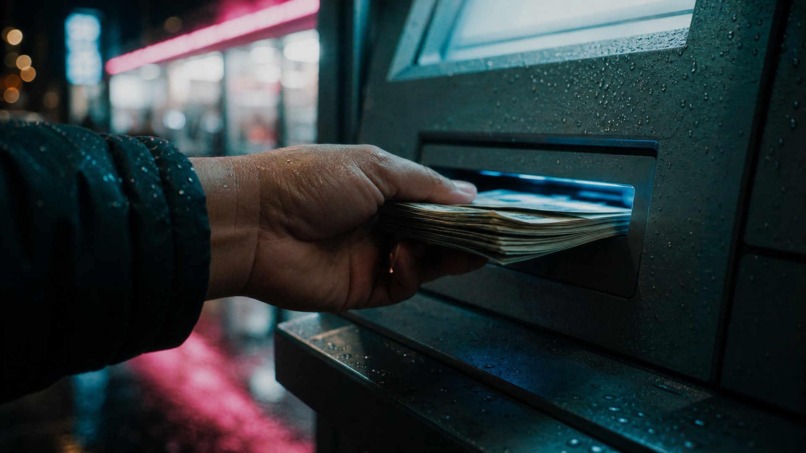
Illustration originale (non officielle) : le seul point de dépôt, et il est en pleine rue.
OFFICIEL
Braquer : « à peu près n'importe quoi »
Rob Nelson a résumé la portée du système en une phrase : boutique d'écouteurs, banque, agence de prêt sur salaire, fourrière de police. Seul ou à deux, sans mission scriptée.
Types de cibles et logique de gain
Cible
Statut
Ce qu'il faut savoir
Boutiques de quartier
PRESSE · 18/11
Quelques milliers de dollars au mieux, non marquées sur la carte. ECO-07
Bijouteries, petites banques
PRESSE · 18/11
Cibles marquées, butin à receleur spécifique. ECO-05
Repaires de gangs
PRESSE · 18/11
Marchandise et drogue : invendables sans receleur. ECO-05
Fourgons blindés
PRESSE · 18/11
Billets possiblement marqués, donc écoulables seulement chez un receleur particulier. ECO-05
Fourrières de police
OFFICIEL
Cité par Rob Nelson comme cible libre. ECO-03
Le coffre : le seul vrai arbitrage
ECO-04Faire sauter le coffre : rapide, mais une partie des valeurs est détruite.
ECO-04Chercher la combinaison : tout le butin, mais chaque seconde passée à l'intérieur augmente les chances d'encerclement.
ECO-04Issue de secours : de nombreux bâtiments ont une sortie arrière pour échapper au cordon.
ECO-09Volume : un sac plus grand se choisit en préparation, mais la capacité du coffre du véhicule fixe la limite absolue.
OFFICIELPRESSE · 18/11
L'argent liquide se perd : la règle des trois poches
C'est la mécanique la plus contraignante de l'économie, et la plus mal comprise : dans GTA VI, l'argent que vous portez n'est pas de l'argent acquis. Rob Nelson, co-directeur de Rockstar North, l'a formulé sans détour : « l'argent liquide peut aussi se perdre ; vous avez un compte en banque et de l'argent sur vous — si je meurs sans l'avoir déposé, cet argent disparaît ». ECN-27
1. Solde bancaire
En sécurité. Consultable et transférable via l'application bancaire du téléphone. C'est là que doit dormir tout ce que vous ne dépensez pas dans l'heure.
2. Espèces portées
Perdues en cas de mort ou d'arrestation. Réservées aux achats immédiats : munitions, réparation, entrée. Ne jamais garder un butin dessus.
3. Butin en sac
Ni dépensé ni déposé : les objets de valeur (bijoux, billets marqués, drogues) doivent passer par un receleur. Un braquage n'est pas terminé tant que ce n'est pas converti.
La règle qui change tout — après chaque coup, déposer avant de recommencer. Un aller-retour à un ATM coûte quelques minutes ; une mort avec 4 000 $ en poche coûte 4 000 $. Et il suffit d'un contrôle de police qui dégénère.
Deuxième conséquence, souvent ignorée : l'argent est une condition de progression. Certaines étapes de l'histoire demandent de réunir une somme avant de se déclencher ; porter son argent au lieu de le déposer ne fait pas seulement risquer une perte, cela retarde aussi la suite. PRESSE · 18/11
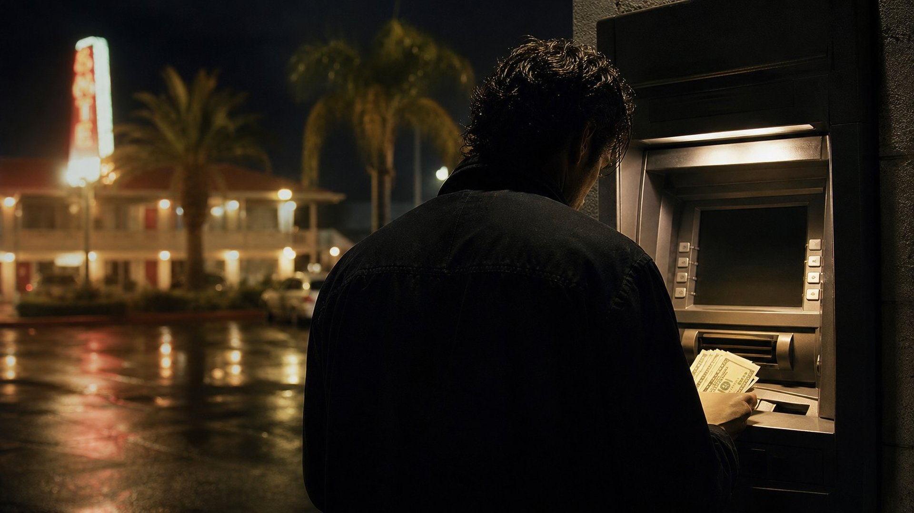
Le geste le plus rentable du jeu : déposer avant de recommencer. Illustration originale générée par IA (JPG, non officielle). ILLUSTRATION IA
PRESSE · 18/11
Lire une cible avant d'entrer : butin et sécurité
La carte donne deux informations décisives avant même d'ouvrir la porte d'une boutique : le butin potentiel et le niveau de sécurité. Les deux premières heures de jeu se jouent sur cette lecture.
Zone de départ : sécurité faible partout
Sauf la banque, toutes les boutiques du secteur initial sont classées en sécurité « faible » : aucun garde armé, très peu de caméras et d'alarmes. C'est là qu'on apprend le métier sans risquer la moitié de son butin. TIP-56
Un seul protagoniste suffit souvent
La plupart de ces boutiques ne demandent que Jason ou Lucia, pas les deux : le duo reste pour les cibles qui le justifient, et se sépare utilement pendant une traque. TIP-56POL-38
Le silence fait partie du rendement : un coup de feu déclenché attire la police pendant que vous fouillez, alors qu'un braquage sans bruit vous laisse le temps de vider la caisse. TIP-57
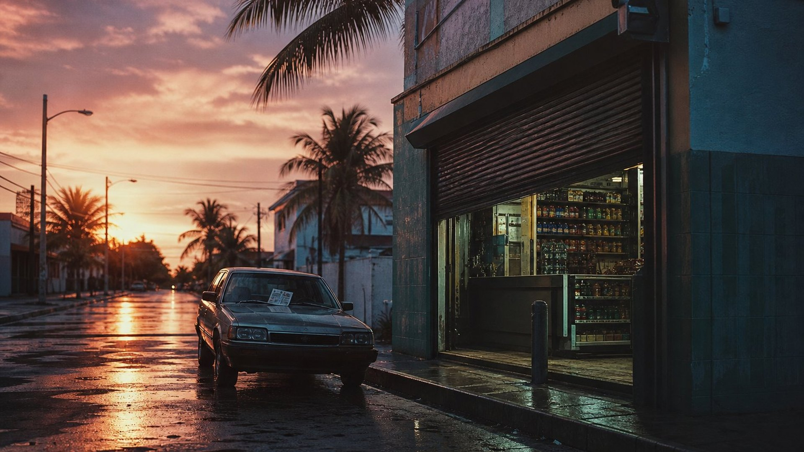
Avant d'entrer : butin potentiel, niveau de sécurité, et un chemin de sortie. ILLUSTRATION IA
PRESSE · 18/11
Receleurs : la moitié du métier
Un braquage n'est pas terminé quand la sirène s'arrête : il est terminé quand le butin est vendu, au bon interlocuteur.
ECO-05Les receleurs sont spécialisés — voitures, drogues, bijoux — et se rencontrent via l'histoire.
ECO-05Les billets marqués exigent un receleur particulier : un magot de banque non écoulé ne vaut rien.
ECO-05Certains receleurs vendent aussi des codes d'accès ou des tuyaux sur des vols à forte valeur — une dépense qui se rembourse.
ECO-08Un véhicule abîmé pendant le vol ou la livraison fait chuter fortement l'offre : la conduite propre est une compétence économique.
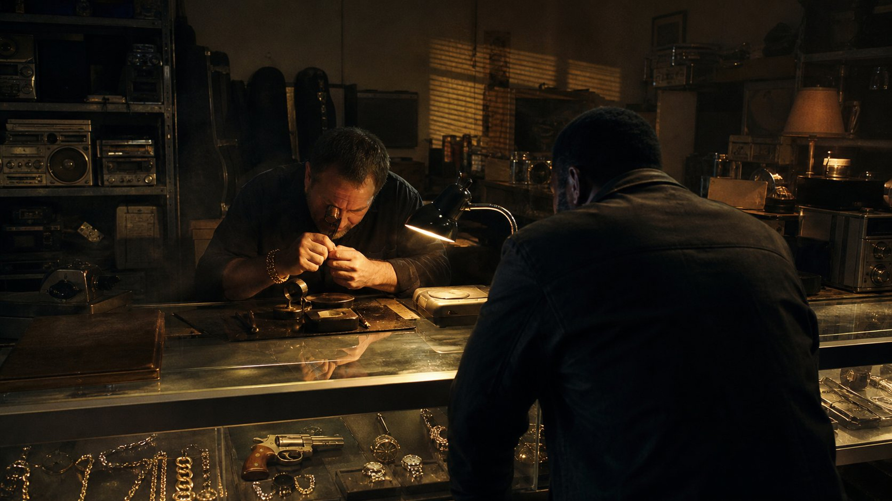
Illustration originale (non officielle) : la pièce où le butin devient de l'argent déposable.
PRESSE · 19/11
Les quatre receleurs, et ce qu'ils paient
Le butin ne vaut rien tant qu'il n'a pas trouvé son acheteur. Chaque receleur a sa spécialité, son quartier et son verrou de progression : vendre au mauvais endroit, c'est perdre la moitié du prix.
Réseau de receleurs, par ordre d'ouverture
Receleur
Spécialité
Où
Ouverture
Moses
voitures à revendre ou à immatriculer
garage, Port Gellhorn
chapitre 2
Buck
drogues et bijoux
Port Gellhorn
chapitre 2
Tyrone
drogues, meilleur prix
nord de Vice City
verrou de progression
Yasmani
billets marqués et bijoux
Little Cuba
verrou de progression
Ordres de grandeur
Bijouteries : 10 000 à 25 000 $. Voitures de la liste de Randy : 30 000 $ et plus pour un véhicule intact. Pay 'n' Spray : 4 000 $ et plus. Coffre de grande banque : jusqu'à environ 205 000 $ en cinq minutes. Les dégâts font baisser la note, et les limites quotidiennes s'appliquent. ECO-31
Ne pas farmer le chapitre 1
L'argent accumulé au chapitre 1 ne suit pas. Les revenus du début sont les missions, les paiements relevés dans la boîte aux lettres chaque matin, et les petits braquages de commerce. ECO-32
Le plafond de liquide
Environ 20 000 $ transportables ; au-delà, il faut déposer (guichet automatique, compte BuckMe). Tout liquide porté est perdu en cas de mort ou d'arrestation — d'où la cache sous les lames du plancher de la chambre de Jason. ECO-33
Le seul vrai mauvais réflexe
Continuer à braquer des supérettes après le chapitre 3. Le temps de jeu est la ressource rare : une bijouterie paie vingt fois plus pour la même exposition. ECO-30
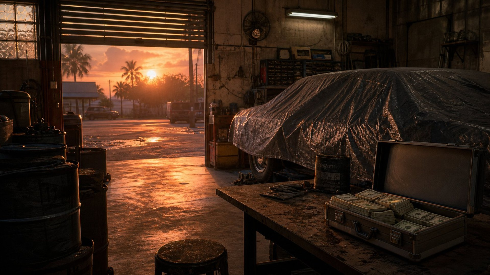
Le garage du receleur au couchant : le butin ne vaut que ce que l'acheteur en donne. ILLUSTRATION IA
Zone masquée par défaut.
La série de missions autour d'AudaCity permet d'acheter la cryptomonnaie de Papadacity : sa valeur plus que double entre l'ouverture de l'achat et l'arnaque finale. Acheter au maximum et revendre juste avant le dernier stunt est la seule opération spéculative réellement rentable du jeu. ECO-34
PRESSE · 19/11
Les premières heures : ce qui rapporte vraiment
Avant le chapitre 2 et les receleurs, les revenus se jouent sur trois choses concrètes : les paquets des Keys, la vente immédiate du produit et les cartes à collectionner. Tout le reste attend.
ECO-35Les quatre paquets des Keys — après la mission « Clean Up After Donnie », Cal signale quatre sites marqués sur la carte, environ 900 $ de cocaïne chacun, défendus par quelques gardes. C'est le meilleur rapport effort/gain du tout début.
ECO-36Vendre, tout de suite — un sac plein n'est pas une fortune, c'est un risque : le produit disparaît avec vous en cas de mort ou d'arrestation. Brian et Donnie rachètent ; il suffit de passer les voir avant de repartir en balade.
ECO-37Le piège de la boutique — quand le caissier signale des bruits à l'arrière, ne pas aller voir avant d'avoir fini la course à la bouteille de rhum de Shirley. Fouiller trop tôt déclenche une fusillade qui met la boutique en quarantaine et bloque la mission longtemps.
ECO-38Cartes et chapeaux — les cartes à collectionner se revendent chez les prêteurs sur gages, la valeur suivant la rareté. Les chapeaux et lunettes arrachés aux adversaires se conservent jusqu'à onze pièces de chaque, mais seulement s'ils entrent dans la garde-robe.
La règle des trois poches, version début de partie. Ce que vous portez est perdu à la mort ; la cache sous les lames du plancher de la chambre de Jason existe avant le compte en banque ; et le compte BuckMe n'ouvre qu'après la mission « Buck Me ». Déposer n'est pas un luxe, c'est le seul moyen de garder. ECO-33
Les Keys, au crépuscule : quatre points sur la carte, environ 900 $ chacun. ILLUSTRATION IA
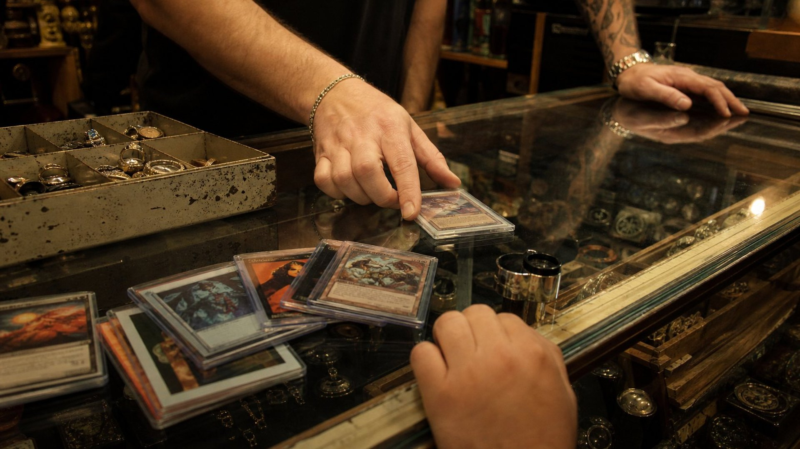
Les cartes n'ont de valeur qu'au comptoir du prêteur sur gages, et la rareté fait le prix. ILLUSTRATION IA
PRESSE · 19/11
La route de l'argent, chapitre par chapitre
Les montants ci-dessous sont ceux des guides publiés au lancement. Ils décrivent des ordres de grandeur, pas des gains garantis : le butin dépend de la préparation et de la fuite.
Rentabilité documentée par progression
Chapitre
Meilleure source
Ordre de grandeur
1
supérettes, plongées au trésor de Kenton
petits montants, puis plusieurs dizaines de milliers au total
2
vente de véhicules volés à Moses
de 1 000 $ à plus de 10 000 $ par contrat
3
bijouteries, puis voitures haut de gamme pour Randy
10 000 à 25 000 $ ; plus de 30 000 $ après le cloneur de clé
fin 4
gros coffres de banque
jusqu'à environ 205 000 $
Deux accélérateurs faciles à manquer. Les sites de plongée de Kenton autour de Key Lento ne paient bien qu'une fois chaque site entièrement fouillé ; les repaires de gangs signalés par une icône jaune se revendent presque immédiatement à un receleur et contiennent parfois armes et véhicules uniques. ECO-39ECO-40
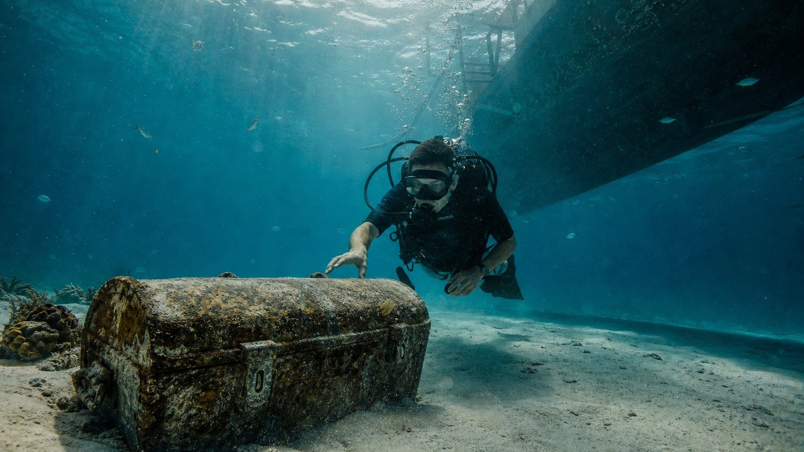
Les plongées de Kenton : la seule source de revenu réellement relaxante du début de jeu. ILLUSTRATION IA
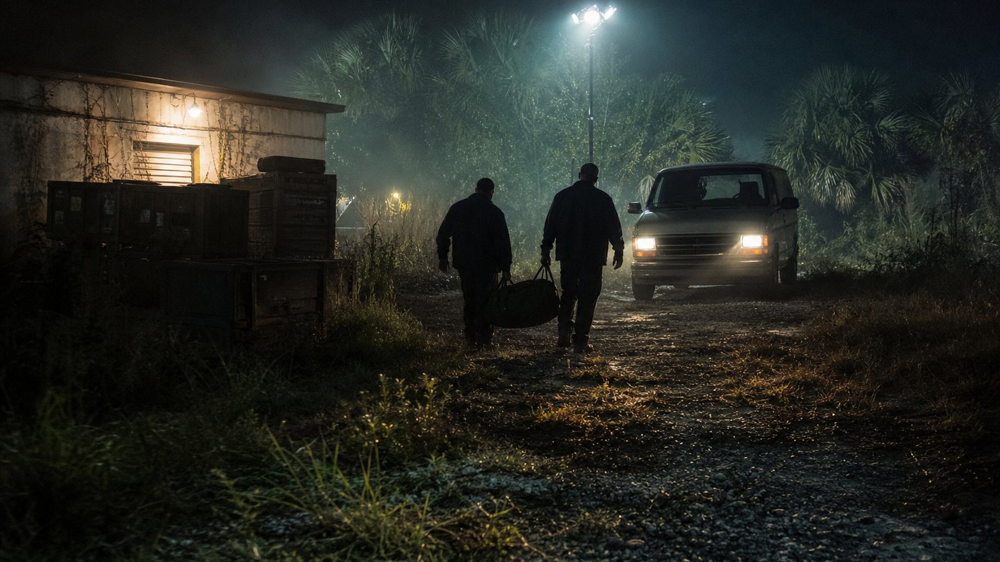
Un repaire de gangs se revend le soir même — à condition d'en sortir. ILLUSTRATION IA
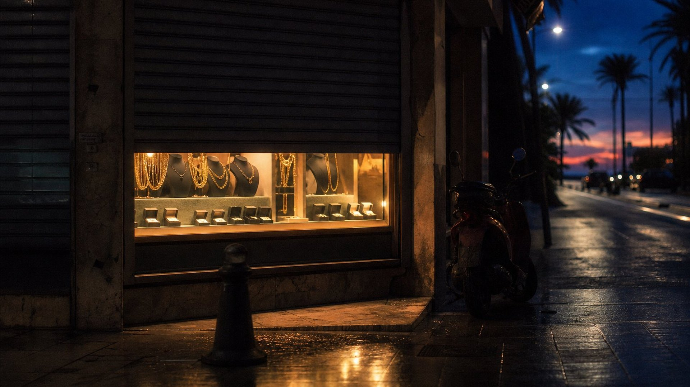
Chapitre 3 : la bijouterie est le premier braquage qui vaut vraiment le détour. ILLUSTRATION IA
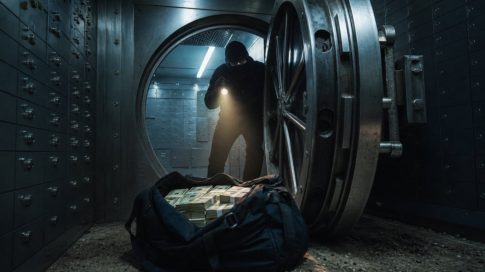
Fin de chapitre 4 : le coffre de banque, et la seule ligne à six chiffres du jeu. ILLUSTRATION IA
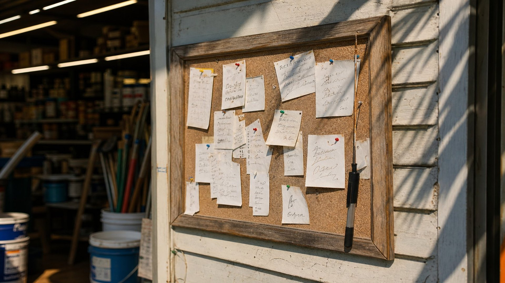
Les petits boulots ne rendent pas riche, mais ils paient la première semaine. Illustration originale générée par IA (JPG, non officielle). ILLUSTRATION IA
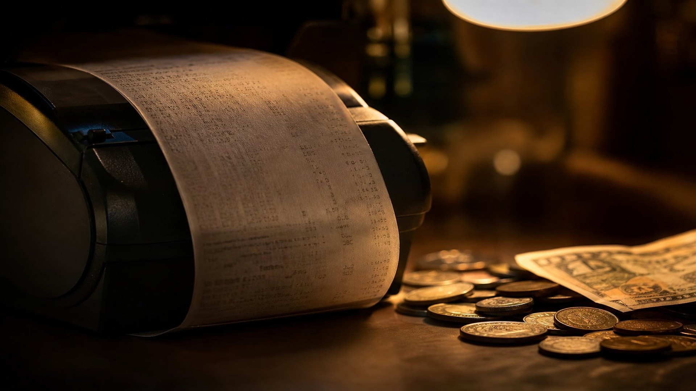
La première semaine se joue en petites sommes déposées souvent. Illustration originale générée par IA (JPG, non officielle). ILLUSTRATION IA
PRESSE · 18/11
Voitures : revendre ou s'inscrire
Revendre
L'application WAINK affiche la valeur de reprise chez un ferrailleur ou un receleur spécialisé. ECO-06
Un véhicule non enregistré finit par disparaître : c'est un actif temporaire.
Plus la voiture est abîmée, plus l'offre baisse. ECO-08
Garder
La même application indique le coût d'immatriculation à son nom. ECO-06
Les garages achetés repoussent la limite de stockage au-delà des trois véhicules initiaux. POL-11
Un véhicule enregistré devient le coffre-arsenal mobile décrit sur la page Véhicules. Voir
Règle simple. Une voiture volée propre et commune se revend ; une voiture propre et rare s'immatricule. Dans les deux cas, ne pas l'abîmer pendant le trajet.
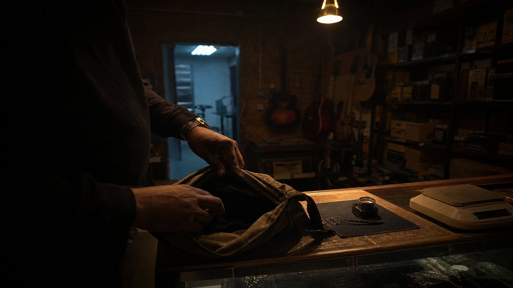
Le receleur transforme un sac en argent : tant que ce n'est pas fait, vous ne possédez rien. Illustration originale générée par IA (JPG, non officielle). ILLUSTRATION IA
PRESSE · 18/11
La boucle de revenus, dans l'ordre
Repérer une cible marquée sur la carte plutôt qu'une boutique anonyme : le rendement par minute est meilleur. ECO-07
Préparer la sortie : sortie arrière repérée, véhicule de rechange garé à distance, tenue de rechange dans le coffre. POL-11
Braquer en arbitrant le coffre : sauter si la police approche, crocheter si le temps le permet. ECO-04
Vendre au bon receleur, puis déposer le liquide au distributeur. ECO-05
Réinvestir : garages, outils, véhicule utilitaire — ce qui augmente la capacité du prochain braquage. ECO-09
Certaines missions d'histoire exigent d'atteindre un montant en caisse avant de se débloquer : la boucle libre alimente donc directement la progression narrative. ECO-10
EN ATTENTE · 19/11
Ce qui n'est pas confirmé
Section volontairement verrouillée. Les tableaux de revenus passifs qui circulent (coût d'achat d'une entreprise, gain quotidien, rentabilité horaire, braquages à plusieurs millions) ne reposent sur aucune source Rockstar. Aucun chiffre de ce type n'est affiché ici.
Estimations communautaires — non vérifiées
Achat et gestion d'entreprises par le joueur : non confirmés par Rockstar. ECO-11
Les grilles de revenu passif par entreprise et les classements de gains horaires sont explicitement des estimations pré-lancement, extrapolées de GTA Online. ECO-12
Les listes de braquages à plusieurs millions de dollars ne proviennent d'aucune source officielle.
ESTIMATION À vérifier après le 19/11/2026. Aucun de ces montants n'est repris dans les recommandations de ce guide.